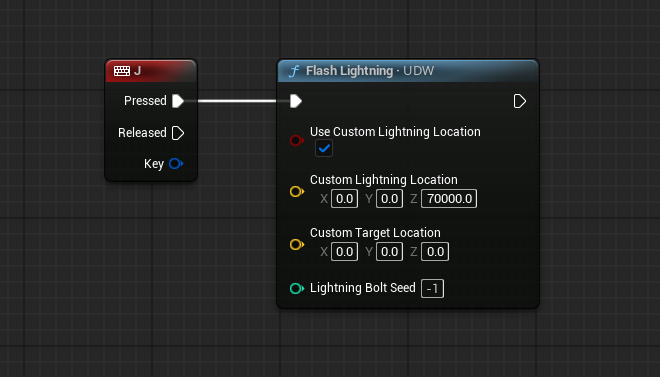

天气粒子与闪电
雨、雪、尘三套粒子的参数，粒子碰撞的三种模式与性能取舍，生成体积的控制，以及闪电与「可被雷击」接口。
雨（Rain Particles）
Rain Particles 分类控制雨滴效果，强度由当前天气状态里的 Rain 值驱动。
可以调节的项目包括：
- 雨滴的颜色与受光强度；
- 相机周围同时存在的最大粒子数；
- 打在碰撞面上的溅射粒子（数量与外观）。
粒子碰撞与生成范围的公共设置在 Shared Particle Settings 分类里，三种粒子共用。
雪（Snow Particles）
由天气状态里的 Snow 值驱动。可调最大粒子数、环境受光强度、粒子缩放与颜色。
尘（Dust Particles）
由天气状态里的 Dust 值驱动，表现是空气里漂浮的沙尘。可调缩放、颜色、alpha 与最大粒子数。
粒子碰撞
雨、雪、尘都带碰撞系统，默认开启，作用是让粒子打在面上、并且不进入室内。
碰撞模式由 Particle Collision Mode 选择：
| 模式 | 做法 | 优点 / 局限 |
|---|---|---|
Simple Collision |
对关卡的简单碰撞几何体做射线检测，通道由 Weather Particle Collision Channel 指定（默认 Visibility）。 |
灵活，能精确控制哪些面挡雨；代价是 CPU 开销，即使做了优化（复用少量粒子路径）仍可能明显。 |
Distance Field Collision |
完全走 GPU 发射器，查询全局距离场做碰撞。 | CPU 开销低；但无法单独让某个面挡粒子而不影响距离场光照，反之亦然。 |
No Collision |
不做碰撞。 | 最省，但粒子会穿进室内。 |
Simple Collision 用的是查询（query）射线，所以网格的碰撞响应里必须启用 Queries； Distance Field Collision 要求项目开启生成 Mesh Distance Fields，并且依赖全局距离场——被引擎可扩展性设置关闭时也会失效。
几种特殊情况：
-
没有网格也想挡住粒子：用
UDS Occlusion Volume，它有个选项可以阻挡天气粒子。 这个做法只在 Simple Collision 模式下有效。 -
移动空间、要求零延迟（例如玩家驾驶的车辆内部）：用
Weather Particles Kill Sphere组件，球内粒子会被直接杀掉，没有碰撞延迟。 注意它是 Niagara 更新流程里单独处理的一环，同一时间只能有一个该组件生效； 多处需要时得自己管理启用/停用。
粒子的生成范围
相机移动时粒子看起来到处都是，其实只在一个跟随相机的体积里生成。生成范围的参数在
Shared Particle Settings 分类：
| 设置 | 说明 |
|---|---|
Max Spawn Distance、Spawn Distance Distribution | 粒子在 X/Y 方向上距相机多远生成，以及在该范围内的分布。 |
Spawn Box Height | 粒子可以在相机上方多高的位置生成。 |
World Spawn Offset、Camera Forward Spawn Offset | 把整个生成区域的中心相对相机挪开（世界方向 / 相机前方）。 |
如果不想围绕相机、而是要围绕一个固定位置生成，在分类的高级选项里用
Custom Weather Particle Camera Transform 指定即可。
闪电
UDW 里有两种闪电：
| 类型 | 表现 |
|---|---|
| Lightning Flashes | 完整的闪电柱，会向场景投射光照，并伴随一声雷响。 |
| Obscured Lightning | 藏在云层里的闪烁粒子效果，只有光，没有雷。 |
Lightning 分类里可以调整两种闪电的间隔/频率、闪电平行光（可关掉）与颜色。
雷声相关设置在 Sound Effects 分类。两种闪电的数量都会随天气状态里的
Thunder / Lightning 值缩放。
手动触发一次闪电
调用 UDW 的 Flash Lightning 可以生成一道闪电。它支持自定义位置：
传入的位置是闪电根部的位置，应在云层高度；Custom Target Location
非 0 时，闪电柱会结束于该点。

让闪电劈指定 Actor
如果希望随机闪电能落在关卡的特定物体上，给这些 Actor 实现蓝图接口
UDW_Lightning Strikable Actor Interface：
- 实现接口函数
Test for Potential Lightning Strike，输出该 Actor 当前是否可被劈中，以及被劈中的世界坐标。 - 在 UDW 的
Lightning分类里打开Enable Lightning Flashes Striking Actors，开启检测逻辑。 - 用
Fraction Of Lightning Flashes Which Can Strike Actors控制有多大比例的闪电会去尝试劈 Actor（前提是范围内有可劈目标）。
接口里还有一个函数 Struck by Lightning，会在该 Actor 被劈中时由 UDW 调用，
可以用来加特效或触发游戏逻辑。